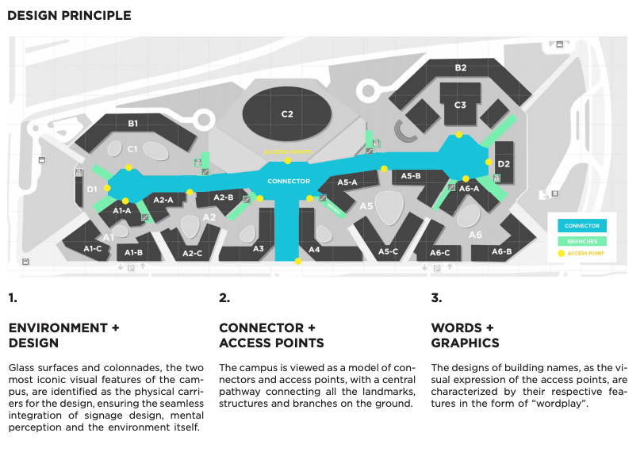

The distinctive geography of the NYUAD campus, with its irregularly shaped buildings and alleys has made its way unaltered in the maps we use. As it is often the case. But when designing a map, what one leaves out is as important as what one puts on it. And often radical alterations can be a good thing:
In this simple design, Owen Zhang, a student of the class of Wayfinding proposes a radical simplification of the map of the Campus ground floor.
 Owen Zhang
Owen Zhang
The simplification allows for faster identification of landmarks and destinations. The peculiar shapes of the buildings, in many cases not even visible from the ground, are ignored. The core attention is all on the fastest and most effective way to provide information on the user position on campus. All that is not relevant is removed. Even the most conspicuous architectural feature can be useless on a map: No visitor needs to know that building A3 is L shaped, that the library is an oval, while A5 is an irregular hexagon. They just want to go there without hesitation. The alteration of the actual geography of the map is substantial and yet the users will find their way with accuracy and precision.